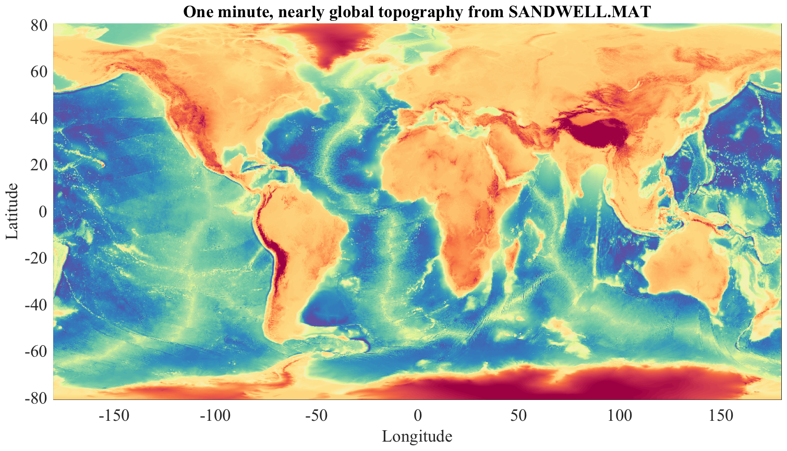

ABOUT_SANDWELL One minute resolution topography data from Smith and Sandwell. _______________________________________________________________________  _______________________________________________________________________ SANDWELL.MAT and SANDWELL.NC contain nearly-global topography data from the Smith and Sandwell database version 18.1, at its full, approximately one minute resolution. SANDWELL.MAT is a Matlab version, while SANDWELL.NC is a NetCDF version. These both contain identical data. SANDWELL is distributed as a part of JDATA, a supplement to the software toolbox JLAB, and is available at http://www.jmlilly.net. In Matlab, LOAD SANDWELL for the Matlab version, or NCLOAD SANDWELL for the NetCdf version, leads to a structure containing the following fields sandwell.about Pointer to this document sandwell.lat Array of latitudes [17280 x 1] sandwell.lon Array of longitudes [21600 x 1] sandwell.topo Matrix of topography [17280 x 21600] Typing 'use sandwell' maps these fields into variables in the current workspace. TOPO is a matrix of topography in units of kilometers and is positive for above sea level, and negative for below sea level. LAT and LON output are *grid-centered*, that is, they indicate midpoints of the topography cells. LON is uniformly spaced, but LAT is non-uniformly spaced, with bin sizes decreasing poleward. Note that the Smith and Sandwell database is defined only for latitudes between -80.738 and 80.738. Topography at higher northern latitudes is found in the IBCAO dataset, see ABOUT_IBCAO. JTOPO.MAT, a 1/6th degree version of SANDWELL merged with high-latitude data from the International Bathymetric Chart of the Arctic Ocean (IBCAO), is distributed with JLAB; see ABOUT_JTOPO for details. Forming regional datasets is more convenient by directly accessing the original binary file, topo_18.1.img. This can be read using READTOPO. READTOPO and topo_18.1.img are distributed together with SANDWELL. __________________________________________________________________ Data and documentation The original location for the Smith and Sandwell Global Topography Dataset v. 18.1, file 'topo_18.1.img' is http://topex.ucsd.edu/WWW_html/mar_topo.html. The reference for the Smith and Sandwell Database is Smith, W. H. F., and D. T. Sandwell, Global seafloor topography from satellite altimetry and ship TOPO soundings, Science, v. 277, p. 1957-1962, 26 Sept., 1997. __________________________________________________________________ License and Copyright The data file topo_18.1.img is distributed with JDATA for RESEARCH AND NON-PROFIT USE ONLY, in accordance with the copyright statement for the Smith and Sandwell dataset. For details, type 'help topo_copyright'. __________________________________________________________________ Dataset creation For completeness, the m-file ABOUT_SANDWELL also contains steps used in the creation of SANDWELL.MAT and SANDWELL.NC. If you wish to do this yourself, typing 'about_sandwell --create' with JLAB installed and with topo_18.1.img on your search path will recreate SANDWELL. __________________________________________________________________ See also ABOUT_IBCAO, and READTOPO, REGIONPLOT, and TOPOPLOT in JLAB. 'about_sandwell --f' generates the sample figure shown above. Usage: about_sandwell about_sandwell --create __________________________________________________________________ This is part of JLAB --- type 'help jlab' for more information (C) 2015--2020 J.M. Lilly --- type 'help jlab_license' for details